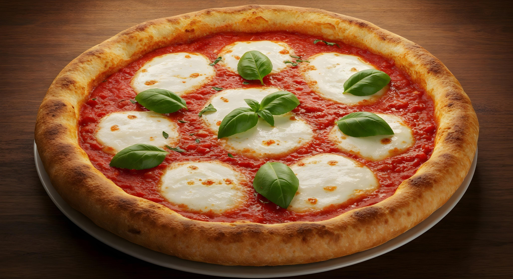

Home
Homemade Pizza

Description
A delicious homemade pizza is a culinary masterpiece, a testament to fresh ingredients and personal touch. The crust, golden and crisp on the outside, gives way to a soft, airy interior, its edges puffed up just right. A vibrant, tangy tomato sauce blankets the dough, serving as the perfect foundation for a generous layer of gooey, melted mozzarella cheese. Scattered across the top are your favorite toppings, each one perfectly cooked—perhaps savory pepperoni curled at the edges, sweet bell peppers, or fragrant basil leaves. Every bite is a harmonious blend of textures and flavors, a truly satisfying and comforting experience.
Ingredients
- 1 store-bought pizza dough (pre-made ball or roll)
- ½ cup of pizza sauce or plain tomato sauce
- 1 ½ cups of shredded mozzarella cheese
- 1 package of sliced pepperoni
- A pinch of dried oregano or garlic powder
Steps
- Preheat the oven to 425°F (220°C). Lightly grease a baking sheet or pizza pan, or line it with parchment paper.
- Stretch the dough onto the prepared pan. Use your hands to press and stretch the dough into your desired shape, leaving a slightly thicker edge for the crust.
- Build your pizza. Spread the pizza sauce evenly over the dough, leaving about a half-inch border around the edges. Sprinkle the mozzarella cheese over the sauce, then arrange the pepperoni slices on top. If you're using optional seasonings, sprinkle them over the pepperoni.
- Bake for 12-15 minutes, or until the crust is golden brown and the cheese is bubbly and slightly browned in spot
- Cool and serve. Carefully remove the pizza from the oven and let it cool on the pan for 2-3 minutes before slicing and serving.